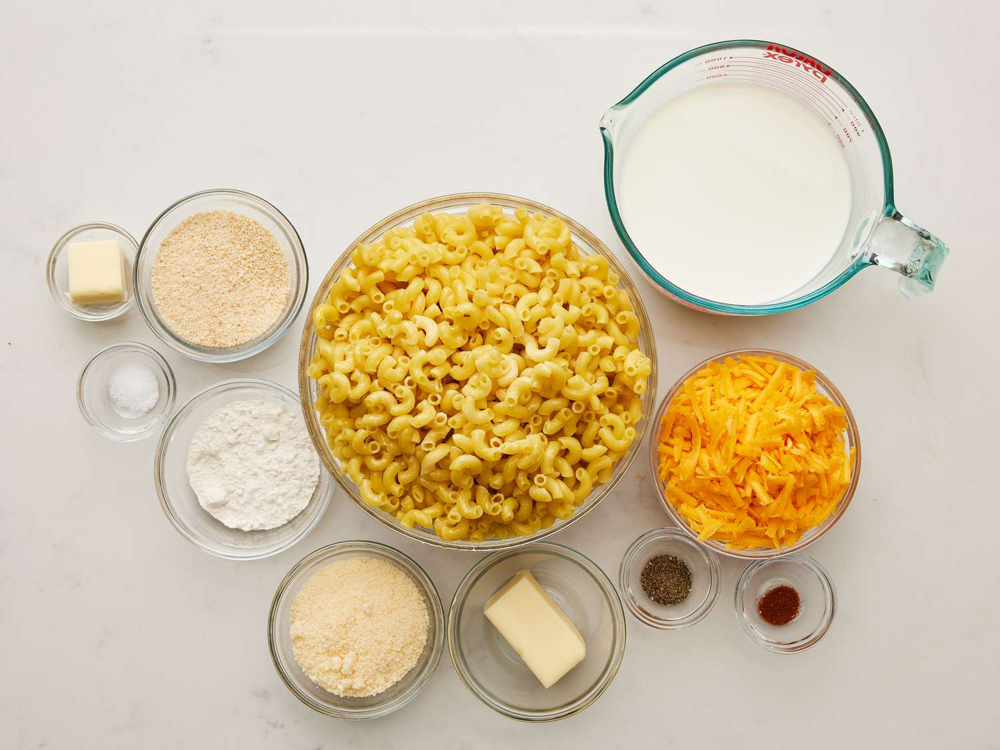

MAC N CHEESE

Cheeses:
3 cups sharp white cheddar
Dairy
8 tablespoons unsalted butter
Seasoning
1/2 cup All Purpose flour
2 tsp kosher salt and more pasta water
1/4 tsp each; black pepper, cayenne pepper, and ground nutmeg
Topping

Boil the Pasta & Prep
Preheat your oven to 375°F and grease a 9x13 dish. Boil the macaroni in salted water for 2 minutes less than the box instructions. Drain and set aside.
Make the Cheese Sauce
In a large pot, melt 6 tbsp of butter over medium heat. Whisk in the flour for 1 minute, then slowly whisk in the milk until thickened and bubbling. Remove from heat and stir in all seasonings plus 4 cups of the mixed cheeses (reserve 1 ½ cups for the top) until smooth.
Combine and Bake
Stir the cooked macaroni into the cheese sauce. Pour half the mixture into the baking dish, sprinkle with half of the remaining cheese, then top with the rest of the mac. Finish by sprinkling the remaining cheese and the buttered breadcrumbs over the top. Bake for 30 minutes until golden and bubbly.